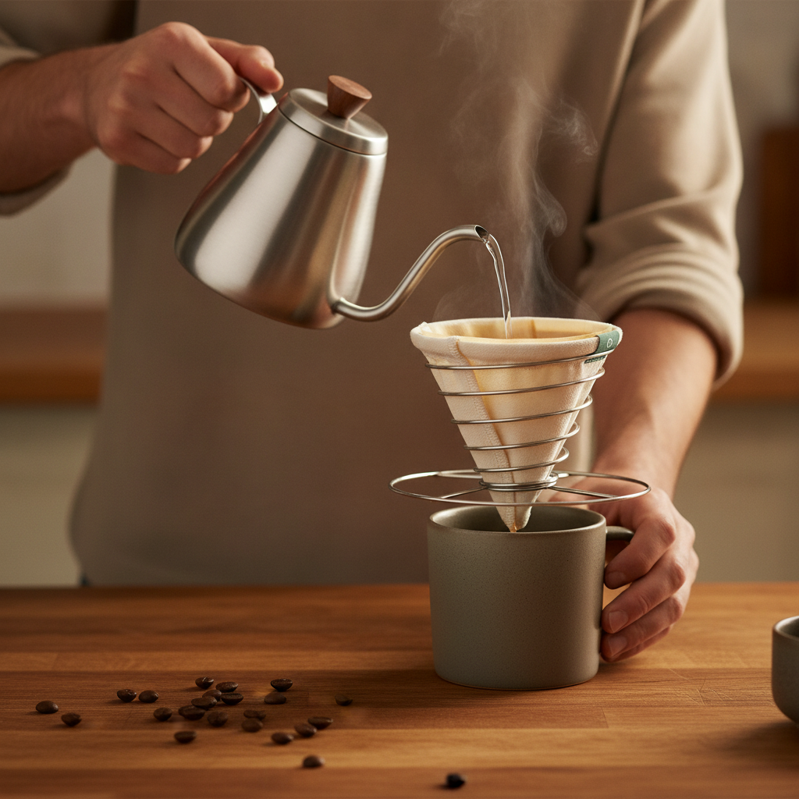
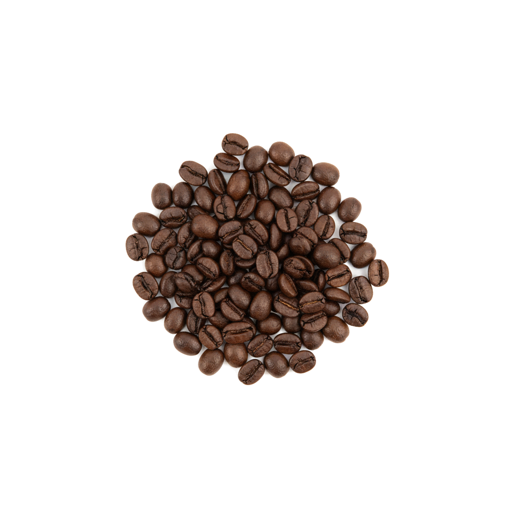
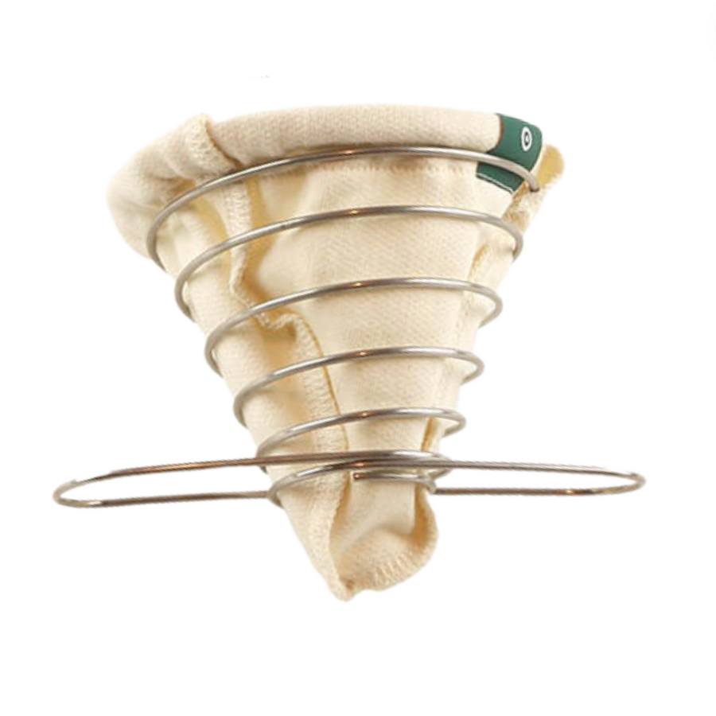
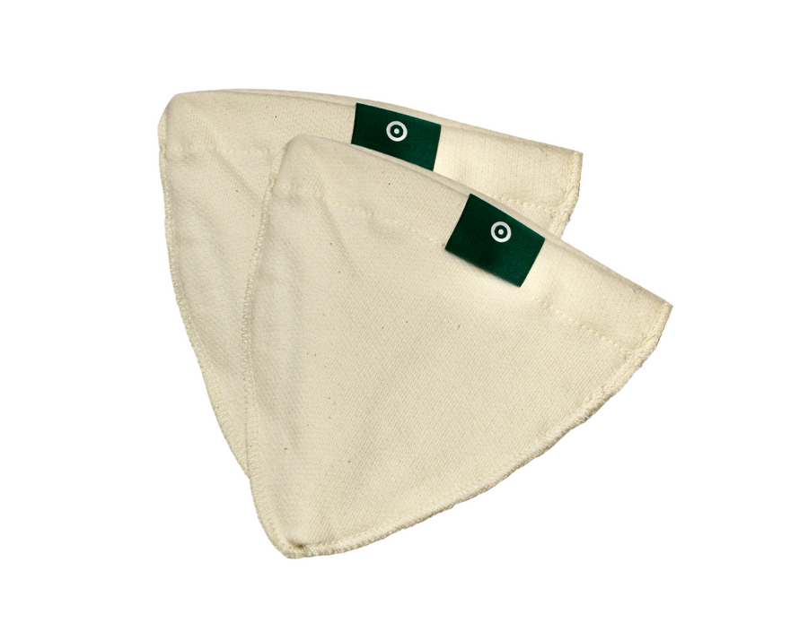

Fuller flavour
Natural cotton lets the aromatic oils through for a richer, rounder cup.
Made in Canada · Zero-Waste
The reusable organic-cotton filter that brings out fuller flavour — no paper, no plastic, built to last for years.
★ 4.9/5 · 2,000+ happy brewers · Free shipping over $50


Why cloth wins
Paper filters trap the oils and pile up in landfill. Organic cotton does the opposite.
Natural cotton lets the aromatic oils through for a richer, rounder cup.
One ACE replaces 1,000+ disposable filters a year. Just rinse and reuse.
Tip the grounds straight into your garden — no soggy paper, no mess.
Quality-sewn organic cotton + a steel coil that holds its shape for years.
1 ACE = 1,000+ paper filters saved every year
Ritual, not rocket science
Set it over your favourite mug and brew like a pour-over — no machine, no paper.
Spoon your favourite coarse-ground coffee into the cotton filter.
Rest the ACE over your mug, pour a little hot water, let it bloom 30s.
Pour in slow circles. The cotton brews a clean, full-bodied cup.
Tip the grounds, rinse the cotton, hang to dry. Ready for tomorrow.
Our Mission
Every year, billions of paper filters and plastic pour-overs hit the landfill.
The ACE Brewer is our answer — one beautifully-made, compostable-friendly filter that lasts for years, sewn right here in Canada.
Get brewing
Start with the brewer. Keep it fresh with replacement filters whenever you like.

The brewer plus one extra cotton filter — never miss your morning.
$72 $80 Save $8
Add bundle
Replacement cloth — keeps every cup tasting clean.
Loved by home brewers
4.9/5 2,000+ verified reviews
“My morning cup is suddenly fuller and rounder — the oils come through instead of getting trapped. I won't go back to paper.”— Mara L., Halifax, NS
“I tip the grounds into the compost and just rinse the filter. Knowing I've cut the landfill out of my routine feels really good.”— Devon R., Portland, OR
“I used to run out of paper filters at the worst moment. One ACE and that whole shopping line is gone for good — such a relief.”— Priya S., Calgary, AB
“A quick rinse under the tap and it's ready for the next pot. The cotton washes up beautifully and never holds odours.”— Tomás G., Austin, TX
“It packs flat, weighs nothing, and gives me proper coffee at the campsite. No soggy paper to pack back out — perfect for the trail.”— Élise B., Whistler, BC
“Daily use for over a year and it looks and brews like new. Genuinely the most durable thing in my kitchen — worth every penny.”— Hannah W., Burlington, VT
Reviews shown are illustrative mockup content.
Good to know
Everything you might wonder before switching to a reusable cotton filter.
It brews like a classic pour-over: a steady, even flow you control with your pour. No leaks, no blowouts.
Tip out the grounds, rinse the cotton under hot water, and hang it to dry. Every week or two, give it a deeper rinse — no soap needed.
With regular rinsing, an ACE cotton filter lasts roughly a year of daily brewing. Replacements are $35 whenever you need one.
Yes — for the better. Cotton lets the natural oils through, so your cup is fuller and rounder than paper-filtered coffee.
A medium-coarse grind works best. Start with 1–2 tablespoons per cup and adjust to taste.
The filter is 100% unbleached organic cotton and the grounds compost beautifully. The steel coil is built to last for years.